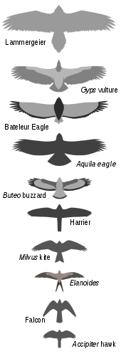

Raptor what are they?
Many species of bird may be considered partly or exclusively predatory; however, in Ornithology, the term "bird of prey" applies only to birds of the families listed below. Taken literally, the term "bird of prey" has a wide meaning that includes many birds that hunt and feed on animals and also birds that eat very small insects.In ornithology, the definition for "bird of prey" has a narrower meaning; birds that have very good eyesight for finding food, strong feet for holding food, and a strong curved beak for tearing flesh.Most birds of prey also have strong curved talons for catching or killing prey.By way of an example, the narrower definition excludes storks and gulls, which can eat quite large fish, partly because these birds catch and kill prey entirely with their beaks,and similarly bird-eating skuas, fish-eating penguins, and vertebrate-eating kookaburras are excluded. Birds of prey generally prey on vertebrates, which are usually quite large relative to the size of the bird.Most also eat carrion, at least occasionally, and vultures and condors eat carrion as their main food source
Type of Raptor?
Eagles tend to be large birds with long, broad wings and massive feet. Booted eagles have legs and feet feathered to the toes and build very large stick nests. Ospreys, a single species found worldwide that specializes in catching fish and builds large stick nests. Kites have long wings and relatively weak legs. They spend much of their time soaring. They will take live vertebrate prey, but mostly feed on insects or even carrion. The true hawks are medium-sized birds of prey that usually belong to the genus Accipiter (see below). They are mainly woodland birds that hunt by sudden dashes from a concealed perch. They usually have long tails for tight steering. Buzzards are medium-large raptors with robust bodies and broad wings, or, alternatively, any bird of the genus Buteo (also commonly known as "hawks" in North America). Harriers are large, slender hawk-like birds with long tails and long thin legs. Most use a combination of keen eyesight and hearing to hunt small vertebrates, gliding on their long broad wings and circling low over grasslands and marshes. Vultures are carrion-eating raptors of two distinct biological families: the (Accipitridae), which only occurs in the Eastern Hemisphere; and the (Cathartidae), which only occurs in the Western Hemisphere. Members of both groups have heads either partly or fully devoid of feathers. Falcons are medium-size birds of prey with long pointy wings. Unlike most other raptors, they belong to the Falconidae, rather than the Accipitridae. Many are particularly swift flyers. Caracaras are a distinct subgroup of the Falconidae unique to the New World, and most common in the Neotropics – their broad wings, naked faces and appetites of a generalist suggest some level of convergence with either the Buteos or the vulturine birds, or both. Owls are variable-sized, typically night-specialized hunting birds. They fly almost silently due to their special feather structure that reduces turbulence. They have particularly acute hearing.
Why are they a Protected Spices?
The Migratory Bird Treaty Act of 1918 (MBTA), codified at 16 U.S.C. §§ 703–712 (although §709 is omitted), is a United States federal law, first enacted in 1916 in order to implement the convention for the protection of migratory birds between the United States and Great Britain (acting on behalf of Canada. The statute makes it unlawful without a waiver to pursue, hunt, take, capture, kill or sell birds listed therein ("migratory birds"). The statute does not discriminate between live or dead birds and also grants full protection to any bird parts including feathers, eggs and nests. Over 800 species are currently on the list Some exceptions to the act, known as the eagle feather law, are enacted in federal regulations (50 C.F.R. 22), which regulates the taking, possession, and transportation of bald eagles, golden eagles, and their "parts, nests, and eggs" for "scientific, educational, and depredation control purposes; for the religious purposes of American Indian tribes; and to protect other interests in a particular locality." Enrolled members of federally recognized tribes may apply for an eagle permit for use in "bona fide tribal religious ceremonies.However, the U.S. Fish and Wildlife Service has been issuing large exemptions to the protections, in the form of bird-killing permits to public and private entities that are not announced in the Federal Register and must instead be disclosed by cumbersome Freedom of Information Act requests. In May, 2013, an environmental activist in New York obtained 13 such permits issued in 2012 and 2013 that included, among others, one issued to a federal agency to kill 5,000 Canada geese and 3,700 other birds in 88 other species (including owls, hawks, osprey, mallard ducks, sparrows, cardinals, woodpeckers, etc.) across NY State from October 2012 to September 2013 .The Act was enacted in an era when many bird species were threatened by the commercial trade in birds and bird feathers. The Act was one of the first federal environmental laws (the Lacey Act had been enacted in 1900). The Act replaced the earlier Weeks-McLean Act (1913). Since 1918, similar conventions between the United States and four other nations have been made and incorporated into the MBTA: Mexico (1936), Japan (1972) and the Soviet Union (1976, now its successor state Russia). Some of these conventions stipulate protections not only for the birds themselves, but also for habitats and environs necessary for the birds’ survival.
why do State parks and wildlife deparment moniter Raptors?
Raptor monitoring is a useful tool for park officials and state parks and wildlife division to make decision on land management issue that can arise it give them a good idea of how the ecosystem is with in the surrounding area and also give us a good idea of what is need with in the area to keep the ecosystem driving and also let them know what problems can be around with in the area. The main goal of monitoring the raptors is the over all health of the area ecosystems and what we can do to help maintain them and make them thrive for future raptor spices.